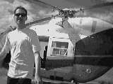
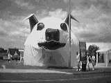

Day 17 — Tuesday 16 Jan
We got up early and headed out of Nelson on Highway 6 until we got to Blenheim. We then took the Queen Charlotte scenic drive route to Picton. This was indeed scenic, in between the raindrops landing on the windscreen. It was a very winding road, and took quite a while to drive along. When we finally got to Picton, we had a quick stop and Rich went to a bakery and picked up a couple of bread rolls.
We checked in for the 11am Lynx and waited in the car reading a local newspaper. There were a few announcements on the tannoy in the passenger terminal but all we could hear was "delay", "Wellington". It eventually transpired that there was a problem with the berth at Wellington and the Lynx couldn't take any vehicles. We would have to take our chance on one of the later crossings. There was no need to stay with the car for a while and so we joined the queue of people waiting to get some food. There was very little information available about what would happen now — basically, they would try and squeeze as many cars as possible onto the next few crossings. We ate and then decided we ought to wait with the car. We watched the Interislander ferry arrive and all the trucks and cars disembark. We then watched all of the booked vehicles board the ferry. Some attendants started to walk up and down the line of cars and handing out boarding passes. We were fortunate and managed to get on this, the 1:30pm from Picton. We parked the car next to one of the train carriages and explored the ship.
It was almost full, not really a surprise, and we had to hunt around to find a couple of seats. Due to the loading of the extra cars, the ferry was now also running late and an announcement was made that we were now not due in Wellington until 5pm. Still, at least we were on it.
We sat in the Queen Charlotte lounge and watched as the ferry sailed through the Queen Charlotte sounds. There were a group of travellers sitting near by, they seemed to all be on one of the Kiwi Experience trips, and I was particularly amused by 2 English guys trying to explain "Only fools and horses" to a bemused Canadian girl. Rich and I grabbed some fish and chips on the boat as we thought it would keep us going during our long drive.
We arrived in Wellington and were off the ferry by around 5:15pm, we stopped at the ticket office to hand in our refund form — the Lynx costs more because the crossing time is less and (in our opinion) is a far pleasanter environment. We basically then re-traced our steps of last Tuesday, just in the opposite direction.
Our original plan for today was to get off the Lynx and drive straight through to Rotorua. This could no longer happen as we were 4 hours later setting off from Wellington and so we decided to head back to Taupo. We stopped a couple of times to swap drivers and once at Hunterville at around 7:45pm to call the helicopter company about a flight to White Island tomorrow — we'd booked this originally for 11am but it had been re-timed for 1pm, this suits us fine as it will give us a more relaxed morning tomorrow. Driving along, it became obvious how much more populated the North Island is than the South. On the South Island, only the area around Christchurch seemed to have lots of small towns.
The last hour or so was harder driving as it was dark by now. Fortunately, despite the hire car not being very good on hills, it's lights were very good. I got annoyed with some drivers though as they didn't shut their headlight beams off when passing me and so half-blinded me. Just outside Taupo we caught a glance at the vast number of stars that were visible — even star clusters. The light pollution in Taupo really made a difference and they were no longer visible.
We arrived in Taupo and checked into the "Caboose Taupo" again and had a room opposite the one we were in last time.
Day 18 — Wednesday 17 Jan
We started the day with a "hunter breakfast" at the hotel, before checking out and heading off on Highway 1.
We drove towards Rotorua and stopped at the Te Ngae shopping centre. It had a phone box which we used to call Vulcan — the helicopter company. We also called Rich's folks as they'd left us a few messages on the Lonely Planet Ekno service.
We drove into Whakatane airport and located Vulcan. We had a very in-depth safety briefing with lots of information about what to do in an emergency, and what we should expect on the island. Vulcan was a very professional outfit and they were the first place to request a next of kin telephone number. This was a good thing in our opinion.
We had about a 10-15 minute wait while the helicopter was reconfigured for our group of 9 passengers. The aircraft had been out on a VIP trip in the morning.
We boarded the helicopter and started to fly to White Island (the Maori name is Whakaari, Captain Cook named it White Island because of the clouds of steam). The flight was much more stable than the one last week to the glaciers.
Our pilot, Robert, landed the helicopter in one of three main craters on White Island. White Island is about 324 hectares, about 50km off the coast and it is New Zealand's most active volcano.
We were all issued with a hard hat and a gas mask. The gas mask was to clean the air up if any of us found it uncomfortable — I think we all did at some point. Robert proved to be very knowledgeable about the island and walked us around it. The island last erupted last year and we were shown what difference that had made to the island. In the 1880s and until at least 1914 there was some form of Sulphur mining going on. There are still a couple of huts visible which these miners would have lived in. There was a landslide in 1914 which killed the workers stationed there. It took 2 weeks before the landside was noted. The workers were never found.
We walked around the "safe" part of the island and stood looking into the main crater. At this point the smell of sulphur was very strong and many of us put our gas masks on to help us breathe. The most unexpected thing to me was the noise — the sound of escaping steam. The main crater today had a lake (apparently some times it does, sometimes it doesn't), and watching the steam over the lake was really soothing. The lake is made up of acid, in a ph test it registers as ph -0.25 or thereabouts. There are yellow deposits all over, these are sulphates. The yellow funnels which steam came out of are sulphur.
After our walk around, we took our hard hats and gas masks off and prepared to get into the helicopter. We had to take our shoes off as apparently the acid on the shoes can damage the helicopter. We got in, and the helicopter started up, lifted off and flew us back to Whakatane after doing a couple of last fly's around the island.
We arrived at Whakatane and then drove into Rotorua. We started looking for accommodation and chose the "Ledwich Lodge Motel". We both had a shower as we felt a bit sulphuric after our trip out.
We had a quick look at the footage we'd recorded on the video camera before heading out and both of us smelled sulphur whilst watching the film. We went and had a closer look at the lake before having a brief walk in the town looking for somewhere to eat. We ended up at "Mitas" an Indonesian restaurant. We had a shared platter and so we got to try many different dishes. After our meal we walked back to the unit via an ice cream parlour where we got a Hokey Pokey ice cream each — Hokey Pokey was another thing we'd been told we ought to try.

Rich with the helicopter
Day 19 — Thursday 18 Jan
We checked out of the motel and moved the car to a parking area before heading off in search of breakfast. We ended up at a place called "Zambique", opposite where we ate last night. We both had a bowl of muesli and fruit with yoghurt and juice before heading off for a hunt around the souvenir shops. We bought a couple of books and then realised that we weren't all that sure where we had left the car. We consulted the streetmap and worked out roughly where we needed to get to. This involved us walking past Government Gardens which looked quite pleasant, and seeing the people playing lawn bowls with thermal steam rising around them was funny.
Having found the car, we got a bit confused between Tarewa Road and Tarewara Road and realised that the Sport Luge idea at Extreme Limits wasn't going to happen this trip as it was in the wrong direction. Instead we headed out to the Agrodome Leisure Park in Ngongotaha. This has two main parts, one is a farm type idea and the other is an activity idea. The first thing we did was Zorbing. This involves climbing into an inflated double plastic sphere into which you are strapped in (if you have a dry ride) before rolling downhill. We both had 2 dry rides (the alternative is the wash cycle where there is nothing strapping you in and so you stand up in it and they throw water in with you. If you can run down the hill then you get a free t-shirt). This was really cool. The Zorb was invented to get from the beach to the surf and back again. Apparently the inventor was at the Zorb site today. We watched a couple of people doing wash cycles which looked like good fun.
We then drove off and found the Agrojet site. This was a jet boat ride in the jet sprint mould. Instead of taking a jet boat around rivers and scenery, this goes around a man made course where the water level varies from being waist height to being ankle height. We'd first seen jet sprinting on tv on an "Extremes downunder" programme. This was a fantastic experience and was really, really good fun.
We got a drink each and sat and hoped someone else would do the jetboat so we could get some video footage. Unfortunately there weren't that many people around so this didn't happen. The other activities available where Swoop — a bungyesque thing, DirtThingz — a motorised skateboard and off road go karting.
We then had to head off and so drove along Highway's 5 and 1. We stopped at Tirau to get some petrol. This was the place with the large dog and large sheep that we saw last Monday. We visited the big dog tourist centre and discovered why it was a dog. The owner of the sheep (a sheepskin shop) had the idea of the dog. When the South Waikato District Council were looking for somewhere to put the new public toilets the spot next to the sheep was ideal but the owers didn't just want toilets there and so a compromise was reached involving a tourist centre, toilets, picnic area and car park. We had a pleasant lunch in a place opposite the sheep and dog. We walked back to the car via the Tirau shell and jade centre where Rich bought me a really lovely pendant.
We headed off again on Highway 1 and into Auckland arriving at Cayne's place at 6pm ish. We chatted with Cayne for a while before heading off to "Orbit", the restaurant at the Skytower. This revolves at one revolution per hour which was really cool. Our table was booked for 8pm and so our first revolution was in daylight and we watched the lights come on over the city. After our meal (which was really pleasant) we went to the various observation levels and looked out over the city. We got a taxi back to Cayne's and the just sat around chatting for another hour or so.

The tourist information centre at Tirau
Move on to Auckland and back to the UK or go back to the contents page
Comment on the Nelson to Auckland section